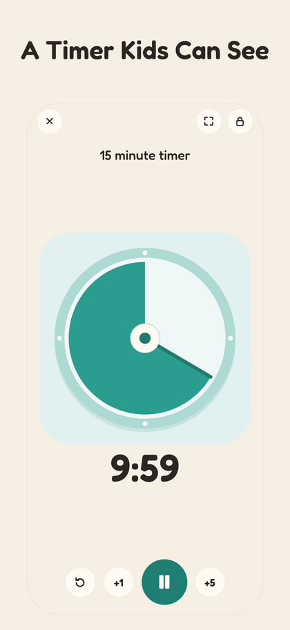
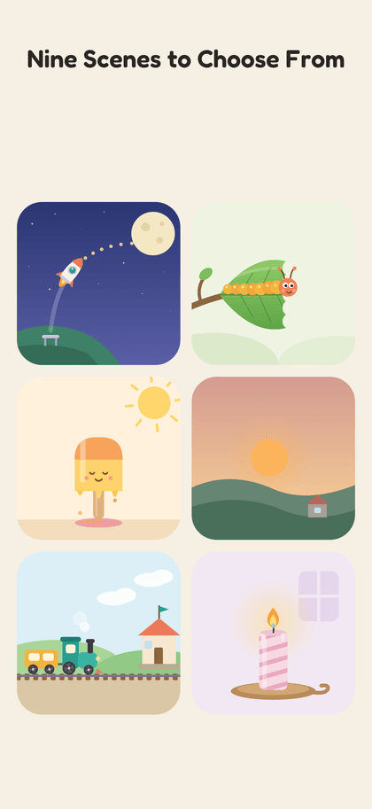
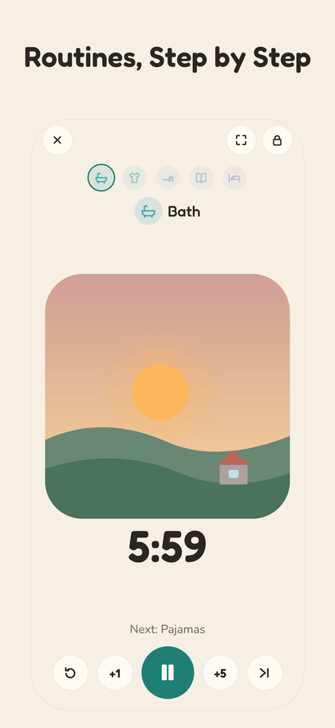
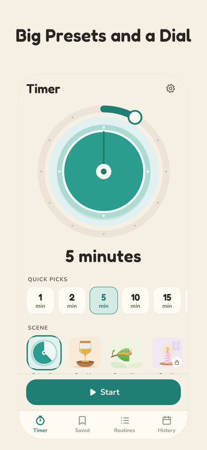
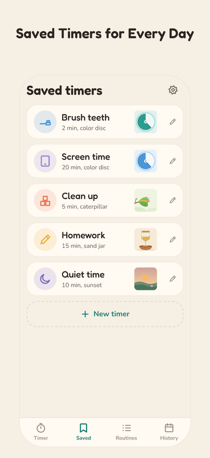
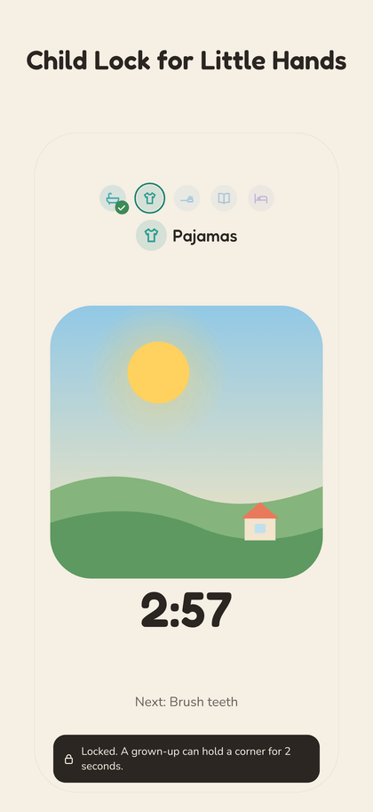

Visual Timer
Visual Timer
A countdown a child can see
A child who cannot read a clock can still watch the time go. Pick a time, pick a scene, press Start. When the scene is done, so is the time.
Get it on the App Store
On the App Store as Visual Timer: Kids Timer. For iPhone.






What it does
Nine scenesA color disc that shrinks, a jar of sand emptying, a caterpillar eating its leaf, a candle burning down, a rocket flying to the moon, an ice pop melting, a train reaching the station, stars going out one by one, and the sun setting. Each one has a little ending when time is up.
Big presets and a dial1, 2, 5, 10, 15, 20, 30, 45 or 60 minutes in one tap, or turn the dial. Pause, add a minute, add five, or start again.
RoutinesMorning, bedtime, leaving the house. Each step has a picture, a name and a time, and they run one after another with a short cheer in between, so the next thing never comes as a surprise.
Saved timersBrush teeth, screen time, clean up, homework, quiet time, or your own, each with a picture a child knows. One tap to start.
Child lockWhile a timer runs, the screen ignores little fingers until a grown-up holds a corner for 2 seconds. Settings open the same way.
Classroom modeTurn the phone on its side and the scene and the time fill the screen, big enough for the back of the room.
Right when it countsThe time is worked out from the clock, so it stays right with the phone locked or another app open, and the end sound plays even then. The screen stays awake while a timer runs. Gentle end sounds, an optional quiet tick, and a soft heads-up at one minute left.
Made for children, so
No ads, no analytics, no tracking, no account. It works offline and everything stays on the phone. Nothing on the timer screen leads out of the app, and settings sit behind the grown-up hold. Parents, teachers and therapists use it, including families living with ADHD and autism, for whom seeing time pass can make a transition easier.
Free and Pro
Free: the color disc, the sand jar and the caterpillar, every preset and the dial, one saved timer, every sound, and history. Pro adds every scene and color, unlimited saved timers, routines, child lock and classroom mode.
Yearly$24.99 a year, with 3 days free for new subscribers.
Lifetime$49.99 once.
Weekly$4.99 a week.
Prices are in US dollars; the App Store shows yours. Subscriptions renew until cancelled in your Apple ID settings.
Questions or ideas? Email bkdigitalleads@gmail.com. See help and the privacy policy.